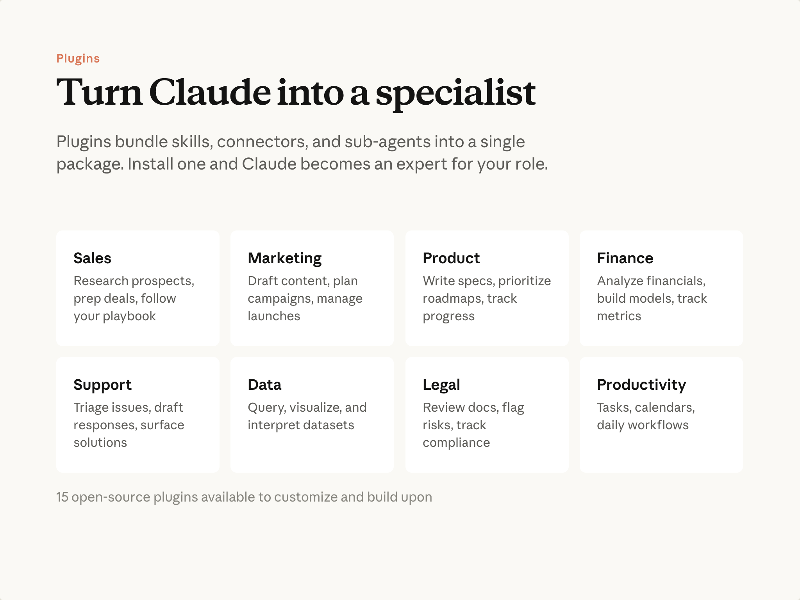
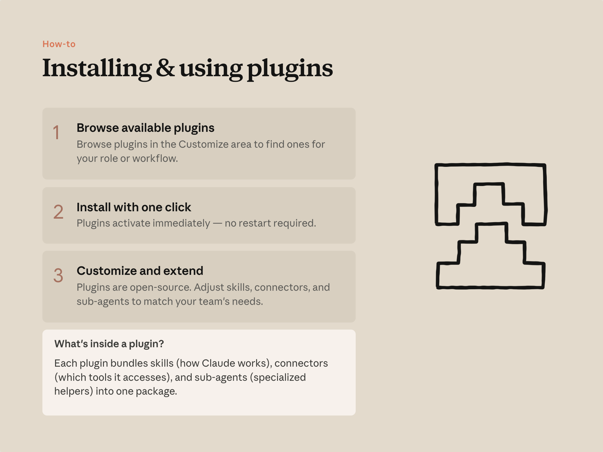

예상 소요 시간: 15분
학습 목표
이 레슨을 마치면 다음을 할 수 있습니다:
- 플러그인이 무엇이며 그 안에 무엇이 있는지 설명하기
- 자신의 역할에 맞는 플러그인 설치하기
- 플러그인을 구성하는 기본 요소로서 스킬 이해하기
플러그인이란

플러그인은 Cowork에 도메인 전문 지식을 부여합니다. 각 플러그인에는 특정 기능에 맞는 내장 지식과 워크플로우가 포함되어 있어, Claude가 전문가처럼 작업에 접근할 수 있습니다.
플러그인은 하나의 묶음으로, 특정 역할이나 도메인을 위해 여러 요소가 함께 패키징됩니다:
-
스킬
— 특정 워크플로우를 처리하기 위한 지침입니다. Claude가 자동으로 활용하거나, 프롬프트에서
/를 사용해 직접 호출할 수 있습니다. 예시: 딜 브리프 구성 방법,/prep-call,/weekly-report. - 커넥터 — 업무가 이루어지는 시스템에 연결합니다. 예시: CRM, 문서, 메시징 도구.
- 서브에이전트 — 전문화된 작업을 병렬로 처리합니다. 예시: 전체 계정 검토 시 계정별 에이전트 할당.
영업, 마케팅, 제품, 재무, 법무, 운영, 고객 지원, 데이터 등 대부분의 지식 업무 역할에 맞는 오픈소스 플러그인이 제공됩니다. 그대로 사용하거나 수정할 수 있습니다.
플러그인 설치하기

- 탐색. 플러그인은 Cowork의 커스터마이즈 영역에 있습니다. 자신의 업무에 맞는 플러그인을 찾아보세요.
- 설치. 클릭 한 번으로 설치됩니다. 플러그인은 즉시 활성화됩니다.
- 커스터마이즈. 설치 후 플러그인은 내 컴퓨터의 폴더로 저장됩니다. 그 안의 모든 내용을 읽고 편집할 수 있습니다.
플러그인 내부 구조
플러그인은 단순한 폴더입니다. 구조는 다음과 같습니다:
sales-plugin/
├── plugin.json ← manifest: name, description, dependencies
├── skills/
│ ├── deal-brief/ ← how to structure a deal brief
│ ├── territory/ ← how to build a territory report
│ └── prep-call/ ← /prep-call in the slash menu
└── agents/
└── account-sweep.md ← subagent for per-account work
모든 파일은 일반 텍스트입니다. 스킬 동작 방식을 변경하려면 해당 파일을 열어 편집하면 됩니다. 새로운 스킬을 추가하려면 skills 아래에 폴더를 추가하세요. 별도의 빌드 단계 없이 Cowork이 폴더를 직접 읽습니다.
스킬에 대하여
스킬은 플러그인의 핵심 구성 요소로 자주 등장합니다. 스킬은 Claude에게 특정 워크플로우, 형식, 프로세스를 처리하는 방법을 가르치는 마크다운 파일입니다.
스킬은 Cowork에만 국한되지 않습니다. 채팅, Claude Code 등 Claude가 실행되는 모든 환경에서 작동합니다. 플러그인은 스킬과 필요한 커넥터를 Cowork 방식으로 묶은 것입니다.
스킬에 대해 더 깊이 알고 싶다면:
- YouTube 스킬 동영상 강좌 — 6부작 상세 안내
- 스킬이란 무엇인가 — 도움말 센터 참고 자료
- 나만의 업무 방식을 Claude에게 가르치기 — 자신의 프로세스를 스킬로 만드는 튜토리얼
- 에이전트 스킬 입문 — 전체 강좌
직접 해보기
- Cowork의 커스터마이즈 영역을 열고 플러그인을 탐색해보세요.
- 자신의 역할에 가장 가까운 플러그인을 설치하세요.
- 설치된 플러그인 폴더를 찾아 스킬 파일 중 하나를 열어보세요. 팀원에게 브리핑하듯 작성된 읽기 쉬운 텍스트임을 확인하세요.
플러그인 더 알아보기
- 플러그인 디렉토리 — Anthropic 및 커뮤니티 제작 플러그인 전체 탐색
- Cowork에서 플러그인 사용하기 — 설치 및 설정 도움말 센터 가이드
- Cowork에서 플러그인 커스터마이즈하는 방법
- 플러그인을 처음부터 직접 만들기
- Cowork 플러그인 발표
- GitHub의 지식 업무 플러그인
- GitHub의 금융 서비스 플러그인
다음 단계
다음: 예약 작업. 플러그인 스킬이든 직접 작성한 프롬프트든, 잘 작동하는 작업이 생기면 매번 프롬프트를 입력하지 않고 일정에 따라 자동으로 실행되도록 설정할 수 있습니다.
피드백
피드백을 여기 에 공유해주세요.
감사의 말 및 라이선스
Copyright 2026 Anthropic. All rights reserved.